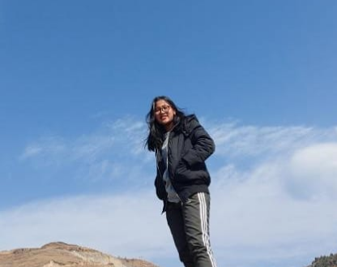
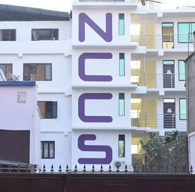

About Me

Hi, I am Anuska Maharjan and this is my personal website. I am originally from Kathmandu, Nepal and I live in Nayabazar. I completed my school from The Excelsior School, Swoyambhu in year 2020 and I completed my high school in NCCS College, Paknajol in year 2022. Currently, I am studying at Herald College Kathmandu, which is located in Naxal, Kathmandu. I took BSC (Hons) Computing Science course and I am in first year, level 4. Taking about my interest or hobbies, I like going to hiking and watch movies or series. As a major of IT,I hope to use my education to any IT field.
Education
The Excelsior School
Year: 2020
Result: 3.65
